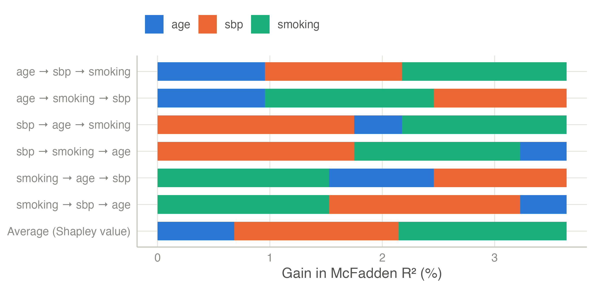
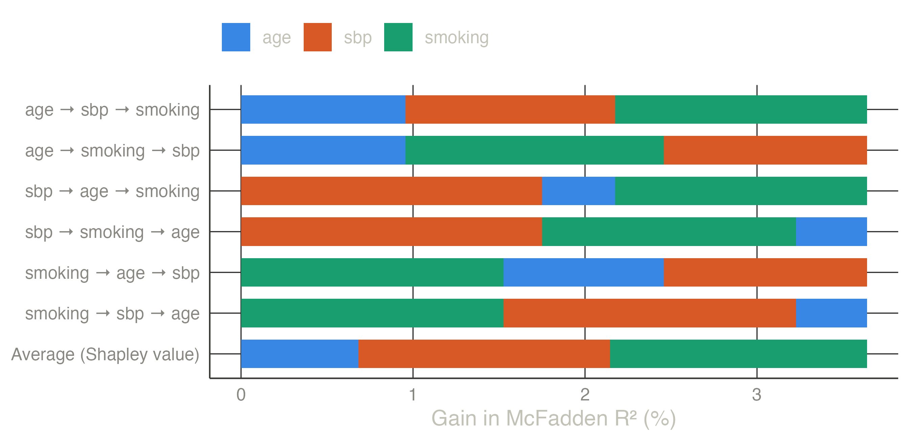
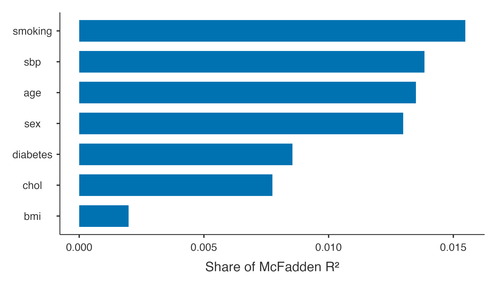
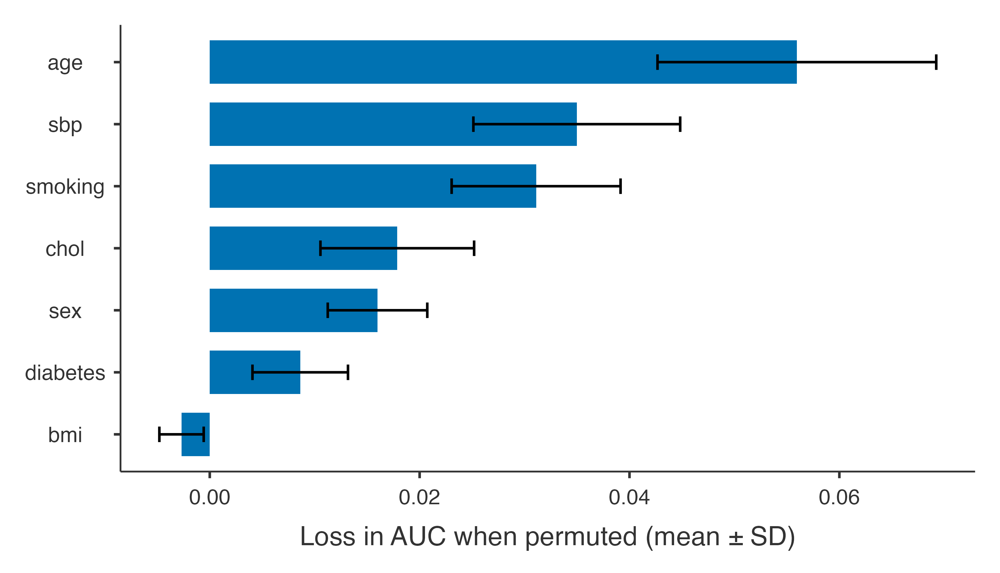
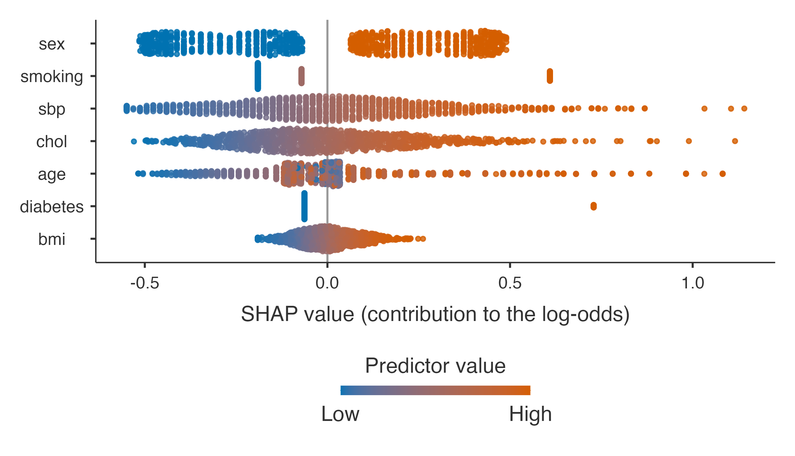
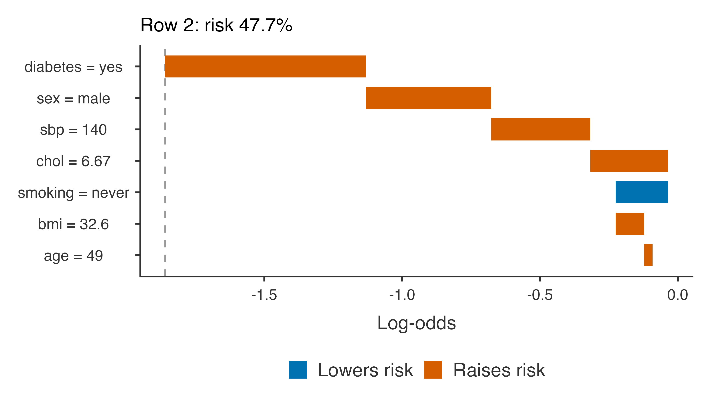

Three views of variable importance — the Shapley decomposition of R², permutation importance, and SHAP values — and an explanation of one patient’s prediction.
Question. Which predictors drive the model’s predictions? And why does one particular patient get the risk the model gives?
Coefficients do not answer the first question: they depend on the units, factors have several, splines and interactions spread a variable over many terms. clinpred offers three answers that treat each predictor as entered (all the terms of a factor, a spline or an interaction count as one predictor), each asking something slightly different.
Step 1: the panel
The model of the external validation example (with the age × sex interaction), and under Variable Importance:
How much of the model’s explained variation does each predictor contribute? The natural idea — add the predictors one at a time and record how much each raises the R² — has a flaw: the answer depends on the order. Predictors that share information (older patients have higher blood pressure) split that information according to who enters first.
A worked example with three predictors
Take a logistic model for the 10-year event with three predictors: age, systolic pressure and smoking. Measure the explained variation by McFadden’s R² (the proportional reduction of the log-likelihood; shown here in %). First, fit every possible subset of the three — 2³ = 8 models:
Model
R² (%)
(none)
0.00
age
0.96
sbp
1.75
smoking
1.53
age + sbp
2.18
age + smoking
2.46
sbp + smoking
3.23
age + sbp + smoking
3.64
The full model explains 3.64%. Now add the predictors one at a time, in every possible order (3! = 6 orders), and record each one’s gain: the R² after it entered minus the R² before. For the order age → sbp → smoking, age gains R²(age) − 0, sbp gains R²(age + sbp) − R²(age), smoking gains R²(all) − R²(age + sbp):
Order
age
sbp
smoking
age → sbp → smoking
0.96
1.22
1.46
age → smoking → sbp
0.96
1.18
1.50
sbp → age → smoking
0.43
1.75
1.46
sbp → smoking → age
0.41
1.75
1.48
smoking → age → sbp
0.93
1.18
1.53
smoking → sbp → age
0.41
1.70
1.53
Average (Shapley value)
0.68
1.46
1.49
Age gains 0.96 when it enters first but only 0.43 when it enters right after blood pressure — age and blood pressure are correlated (r = 0.27), and part of what each says is already said by the other. Smoking, nearly unrelated to the other two, gains between 1.46 and 1.53 whatever the order.
The Shapley value of a predictor is its average gain over all orders (the last row) (Grömping 2007). Every order ends at the same full model, so the three Shapley values add up to the full R² (3.64%), and shared information is split evenly. clinpred’s own decomposition gives the same values (age 0.68, sbp 1.46, smoking 1.49).


Figure 1: Each bar adds the predictors in one order; segment lengths are their gains. All bars reach the full model’s R². The bottom bar is the average of the six: the Shapley decomposition.
In clinpred
With more predictors the number of orders explodes (10 predictors: 3.6 million), but each predictor’s average gain can be computed from the subset models alone — 2^10 = 1,024 fits. clinpred does this exactly up to 10 predictors and, above that, averages 200 random orders. Each predictor as entered is one player: all the columns of a factor, of a spline or of an interaction enter together (an interaction once both of its variables are in). The measure is McFadden’s or Nagelkerke’s R² for logistic and Cox models, the usual R² for linear models.
Importance — Shapley Decomposition of R²
Predictor
R² share
% of R²
Rank
sbp
0.01384
18.7 %
2
chol
0.00775
10.5 %
6
bmi
0.00198
2.7 %
7
age
0.01350
18.2 %
3
sex
0.01299
17.5 %
4
smoking
0.01548
20.9 %
1
diabetes
0.00855
11.5 %
5
Note. McFadden R² of the full model: 0.0741, shared among the predictors by their average gain over all orders of entry (Shapley / LMG).

The share column divides each value by the full R²: smoking, blood pressure, age and sex each account for a fifth or less; cholesterol and diabetes for about a tenth; body mass index for very little. With baseline covariates, a second decomposition shares only the gain over the baseline model among the other predictors, the baseline covariates being in every model: what each one adds to what is always there.
Permutation importance
How much worse does the model predict if a predictor’s values are shuffled, breaking its link with the outcome? The loss of AUC (and increase of Brier score) measures how much the fitted model relies on it. Computed in validation data when there are any — here the external file — it says which predictors carry their value to new patients.
Importance — Permutation
Predictor
AUC loss
SD
Brier increase
SD
sbp
0.03498
0.00985
0.00873
0.00262
chol
0.01787
0.00732
0.00305
0.00106
bmi
-0.00269
0.00211
-0.00060
0.00036
age
0.05595
0.01328
0.00904
0.00238
sex
0.01599
0.00474
0.00332
0.00090
smoking
0.03110
0.00805
0.00477
0.00139
diabetes
0.00862
0.00455
0.00235
0.00100
Note. Computed in: External (heart_external.csv). Each predictor is shuffled 20 times; larger losses mean the model relies more on it.

Age matters most in the external cohort (shuffling it loses 0.056 of AUC). Body mass index has a slightly negative importance: shuffling it does not hurt there — its small effect does not transport.
SHAP values
SHAP values (Lundberg and Lee 2017) explain individual predictions: each predictor’s contribution to a patient’s log-odds, relative to the average patient. For a model that is additive on the log-odds scale, as a logistic model is, they are exact and cheap: a main effect contributes its coefficient times the patient’s deviation from the mean, and an interaction is split fairly between its two variables (Aas et al. 2021).
Importance — Mean |SHAP| (log-odds)
Predictor
Mean |SHAP|
% of total
sbp
0.2280
17.6 %
chol
0.1915
14.8 %
bmi
0.0686
5.3 %
age
0.1720
13.3 %
sex
0.2839
21.9 %
smoking
0.2350
18.1 %
diabetes
0.1158
8.9 %
Note. SHAP: the contribution of each predictor to an individual's log-odds, relative to the average individual of the development data (exact for this additive model).

The summary (beeswarm) plot shows one point per patient and predictor: its SHAP value (horizontal) coloured by the predictor’s value (blue low, red high). Current smokers get a positive push, never smokers a small negative one; high blood pressure and cholesterol push up; men are pushed up, more so when young (the interaction).
Explaining one patient
Patient in row 2: a 49-year-old male with systolic pressure 140, cholesterol 6.67, bmi 32.6, never smoker, diabetes yes.

The waterfall starts at the average log-odds of the development data and adds each predictor’s contribution, the largest first, to reach this patient’s prediction. For this patient, a risk of nearly 50% comes mainly from diabetes, from being a man at 49 (the age where the excess risk of men is largest) and from a systolic pressure of 140; never having smoked lowers it a little. It is the kind of explanation a clinician can discuss with a patient.
Aas, Kjersti, Martin Jullum, and Anders Løland. 2021. “Explaining Individual Predictions When Features Are Dependent: More Accurate Approximations to Shapley Values.”Artificial Intelligence 298: 103502. https://doi.org/10.1016/j.artint.2021.103502.
Grömping, Ulrike. 2007. “Estimators of Relative Importance in Linear Regression Based on Variance Decomposition.”The American Statistician 61 (2): 139–47. https://doi.org/10.1198/000313007x188252.
Lundberg, Scott M, and Su-In Lee. 2017. “A Unified Approach to Interpreting Model Predictions.”Advances in Neural Information Processing Systems 30, 4765–74.